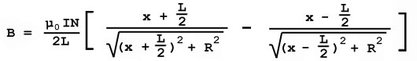

|
|
Links | |
|
|
Handheld Coilgun |
Electromagnetic Force Math
NOTE: This information is more complex than it should be, and probably not scientifically or unitarily correct. Refer to the coilgun poster for a better set of math, or bug me to update this page.
{kind=link}
As you probably already know, current flowing through a wire creates a magnetic field. If you make that wire into a loop, the field is concentrated in the center of the loop. A solenoid is simply a long coil of consecutive loops. This construction creates a larger magnetic field that is relatively uniform inside the coil, and is ideal for coilguns. The magnetic field at any point along the axis of a loop of wire is:
where I is the current, R is the radius of the loop, x is the distance from the center of the loop, and µ0 is a constant equal to 4pi x 10^-7 Tesla-meters per Amp. If we envision a solenoid as many loops of wire, we can use Calculus to find the field at any point on the axis:

where N is the number of turns of wire in the coil, L is the length of the coil in meters, and x is the distance from the center of the solenoid.
That gives us the magnitude of the magnetic field, but we need to know the force it will produce on an iron projectile. Let's look at it with dimensional analysis: Force is in Newtons, which is kg-m/s^2. The magnetic field is given in Teslas, which is equal to kg/(A-s^2). So to get Newtons, we need to multiply the field by something with units of Amp-meters. What we need to do in actuality is differentiate the field, as the pull on the projectile depends on the amount the field changes - a uniform B-field does not exert translational force. If we differentiate the field with respect to distance from the center, we get units of T/m. Now we need to multiply by something with units of Am^2.
![[B-H Curve]](graphics/bhcurve.jpg)
A ferromagnetic object has a very high permeability in fields of less than 20 gauss (0.002 Tesla), but begins to saturate in higher fields. Relative permeability is a unitless value and is the amount that a certain material will increase the field strength: a permeability of 1000 will mean that the magnetic field in and very near to that material will be 1000 times the strength than without. Iron and steel typically have relative permeabilities from 2000 to 5000. Since we generally use fields greater than 5000 gauss, the permeability (also known as susceptability) is less than 0.075% of its maximum (around 2-3 in steel with a maximum permeability of 4000). I've found a handy estimation for the shape and magnitude of the B-H curve:
H is the magnetic field intensity, or simply B/mu0 - that is, the B that would result without using iron divided by mu0. Not only does this give a workable, simple approximation, but it comes in really handy when you start to integrate again. Now why is all this important to coilgunning? The dipole moment can be calculated if we know the percent magnetization of the projectile, and the dipole moment has units of Am^2, which we can multiply by the above dB/dx to get units of Newtons. The percent magnetization is simply:
where S is the maximum relative permeability of the iron, and c is 3.086 x 10^-6. This yields units of A/m, and is the magetization per unit volume - mag/m^3. So to get absolute magnetization, and Am^2, we can multiply by the volume of the projectile. We now have our equation for the force on a theoretical projectile:
Notice now that this does not take into account the length of the projectile in calculations for dB/dx, and is therefore only applicable to a projectile with infintesimal length, but finite volume. Not too realistic, eh?
Now we can get back to the calculus to find the force on a projectile with finite length. A good place to start is, once again, dimensional analysis. Since the field changes nonuniformly over any given interval we know that we will have to integrate over the length of the projectile. Since integration would have the same effect on units as multiplying by the length, we will need an expression with units of N/m, which when integrated will give Newtons. So we need to find the force per unit length. An easy way to do this is to use the cross-sectional area of the projectile instead of the volume, assuming your projectile is a cylinder of constant diameter. Our equation is now:
The steps of integration are shown below:
)^2)/mu0 * dB/dx) dx]](equations/emf09.jpg)
Now let C = -4000*c*µ0. This will let us change H into terms of B, and simplify the math:
Notice how the expression with e came in handy - it fits the distribution of B' very well! Because we are integrating along the length of the projectile, and point x is the center of our projectile:
![[a = x - L/2], [b = x + L/2]](equations/emf14.jpg)
From there it's all plugging in values and computing the answer. Now you can find the force on a ferromagnetic object with a cylindrical shape due to a solenoid. In my simulator, I do a repetitive process, calculating the force every 30 microseconds, adding that to the running total to find the velocity, which I add to another total to find position; and then it all starts over. I'm sure there's a way of doing it with more integrals, but I'm not interested in that yet. I'm quite content with a repetitive version, just as long as the computer does all the work and not me!
Calculations for changing inductance and work done on the projectile will come as soon as I can get them working!